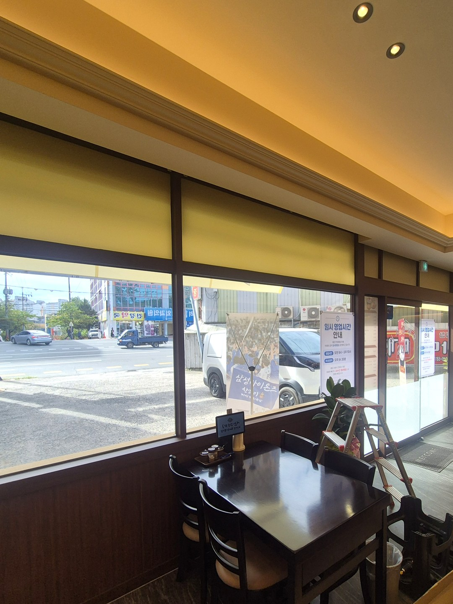
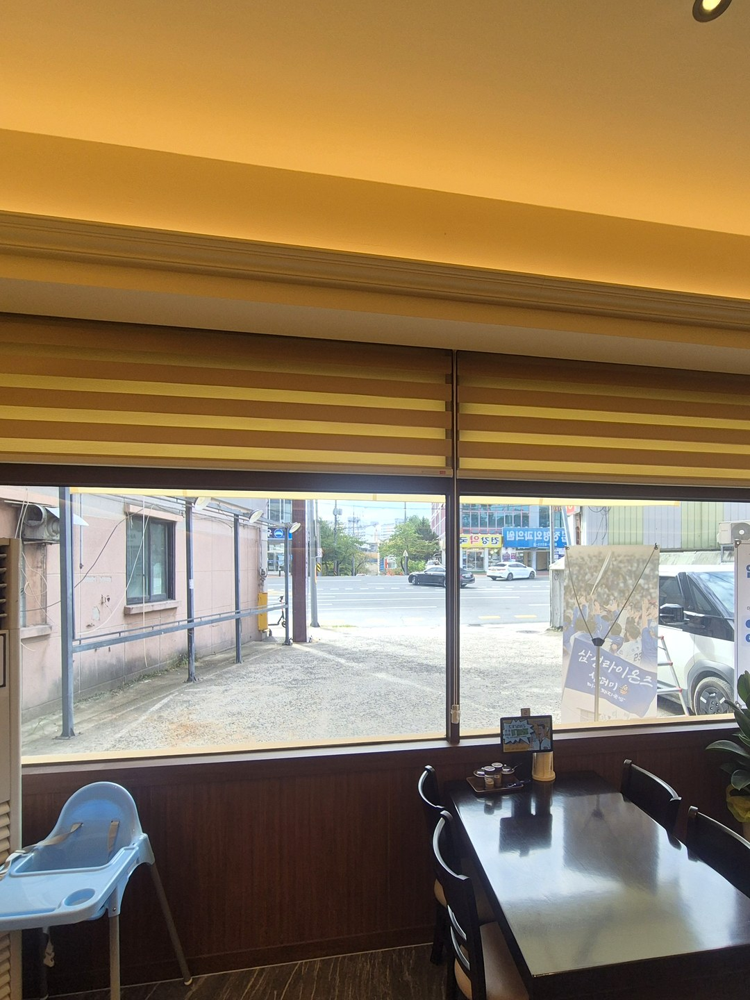
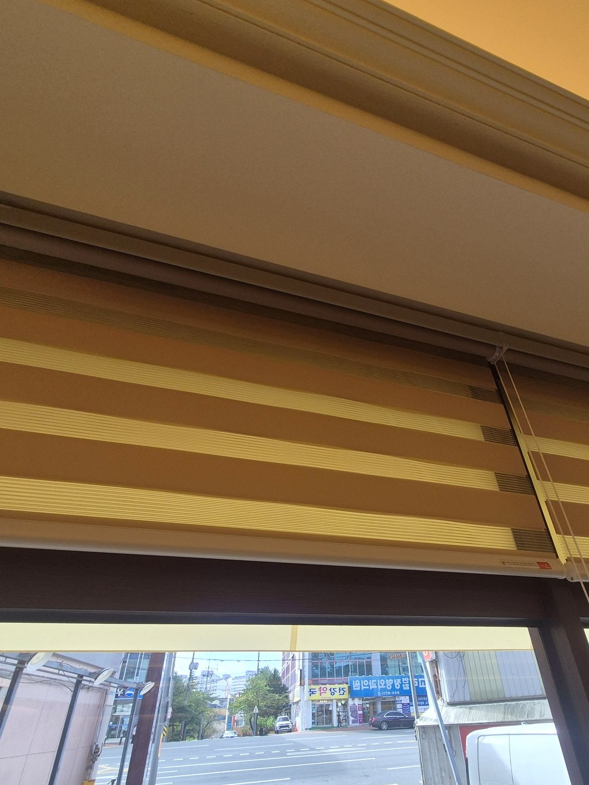
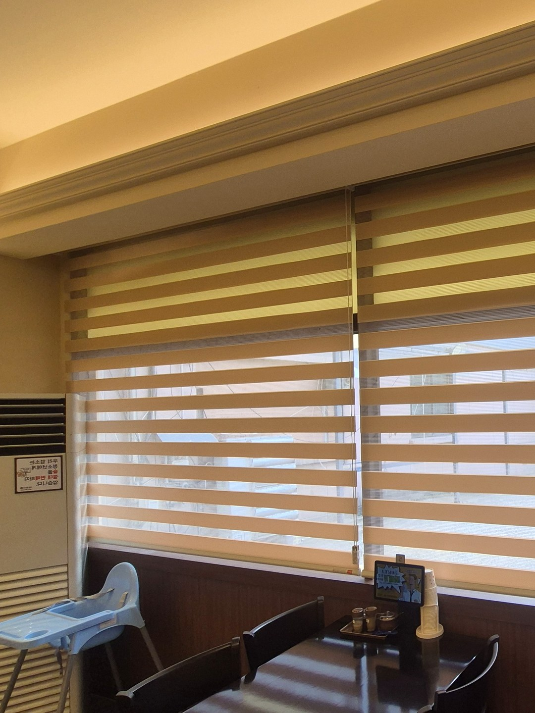
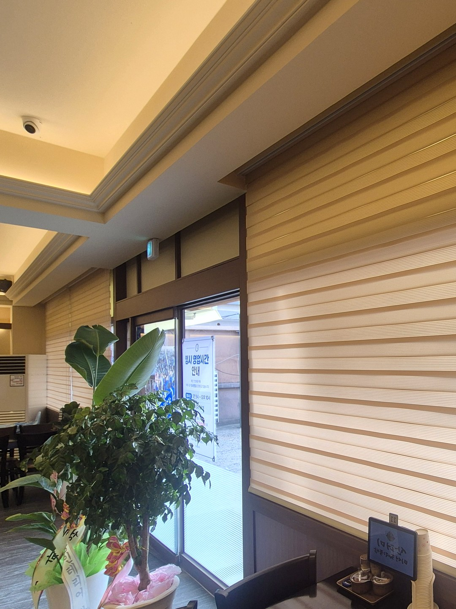

2026년 9월 11일 시공
안동 옥동 미성돼지국밥
전면창 콤비블라인드 시공후기

안동 옥동에 있는 미성돼지국밥 안동옥동점 시공입니다.
도로 쪽 전면창에 콤비블라인드를 달았고, 색은 매장 인테리어에 맞춰 카멜·베이지 톤으로 골랐습니다.
이 글은 색 이야기보다 넓은 전면창을 몇 짝으로, 어디에 달았는지를 중심으로 적었습니다.
ㄱ자로 꺾인 전면창이었습니다
매장 모서리를 따라 창이 ㄱ자로 이어져 있었습니다.
한쪽 면은 도로를 보고, 다른 면은 옆 골목 쪽을 봅니다.
해가 드는 시간이 면마다 달라서, 한 번에 전부 올리고 내리는 구조로는 불편하다고 봤습니다.

창틀 기둥 하나에 한 짝씩
전면창 중간에는 세로 창틀이 일정한 간격으로 서 있습니다.
블라인드도 그 간격대로 끊어서, 기둥과 기둥 사이에 한 짝씩 들어가게 만들었습니다.
짝과 짝 사이 틈이 창틀 뒤에 숨어서 앞에서 보면 거의 드러나지 않습니다.
짝마다 줄이 따로 달려 있어, 테이블 하나 옆 창만 골라 내릴 수 있습니다.

헤드레일 높이는 천장 몰딩에 맞췄습니다
창 위쪽 천장에는 간접조명이 들어간 몰딩이 매장을 한 바퀴 두르고 있습니다.
헤드레일을 창틀 바로 위에 붙이면 몰딩과 창 사이에 어정쩡한 벽이 남습니다.
그래서 몰딩 밑선에 맞춰 붙였고, 블라인드를 올렸을 때 말린 원단이 몰딩 선과 나란히 떨어지게 했습니다.

내렸을 때는 벽판 위까지만
창 아래쪽은 짙은 원목 벽판이 허리 높이까지 올라와 있습니다.
블라인드 길이는 벽판 윗선에서 멈추도록 잡았습니다.
길게 늘어뜨리면 테이블 의자에 원단 끝이 닿고, 손님이 앉고 일어설 때마다 스칩니다.

출입문 유리는 비워 뒀습니다
출입문과 그 옆 좁은 유리에는 블라인드를 달지 않았습니다.
전면창을 다 내려 둔 날에도 입구 쪽은 밖에서 매장 안이 들여다보입니다.

미리 말씀드리는 것
콤비블라인드 원단은 가로 줄 사이사이에 먼지가 쌓이기 쉽습니다.
국물 김이나 기름 연기가 자주 닿는 자리라면 알루미늄 블라인드가 관리하기 수월할 수 있습니다.
이 매장은 주방과 떨어진 손님 자리 쪽 창이라 콤비블라인드로 갔습니다.
가게 전면창을 알아보고 계시다면
창과 매장 벽이 함께 나오게 찍은 사진, 그리고 창틀 기둥으로 나뉜 칸 수를 알려주시면 대략적인 견적을 말씀드립니다.
영업시간을 피해 작업 일정을 잡을 수 있습니다.
매장·사무실 창은 상가 전용 안내에 따로 정리해 두었습니다.